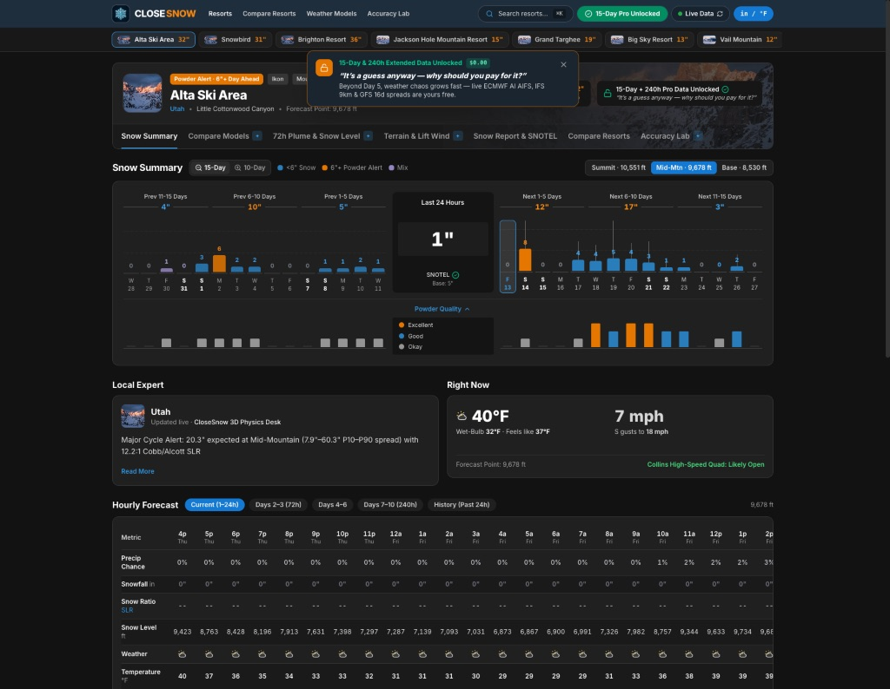

3D Cobb/Alcott snow ratios
Computes dendritic-growth-zone snow ratios, ridge-wind riming compaction, and 700 hPa canyon orographics across base, mid, and summit bands.
Open-Source Web App · 19 Resorts · Live NWP + USDA SNOTEL
15-day multi-model snowfall, 240-hour snow-level tables, and live USDA SNOTEL ground-truth across 19 ski resorts—unlocked in one free click.

Computes dendritic-growth-zone snow ratios, ridge-wind riming compaction, and 700 hPa canyon orographics across base, mid, and summit bands.
Familiar OpenSnow color coding so switchers adapt instantly—with Days 6–15, 240-hour tables, and 6-model matrices unlocked free in one click.
Verifies past 15-day snowfall and base depth directly against hourly USDA mountain telemetry instead of unverified marketing totals.
Scope & limits: Extended Days 11–15 reflect synoptic storm-window probabilities across ECMWF IFS, AI AIFS, and GFS rather than exact inch counts. USDA SNOTEL ultrasonic sensors measure natural settled snowpack on 15 US resorts; non-US resorts use Open-Meteo historical analysis.